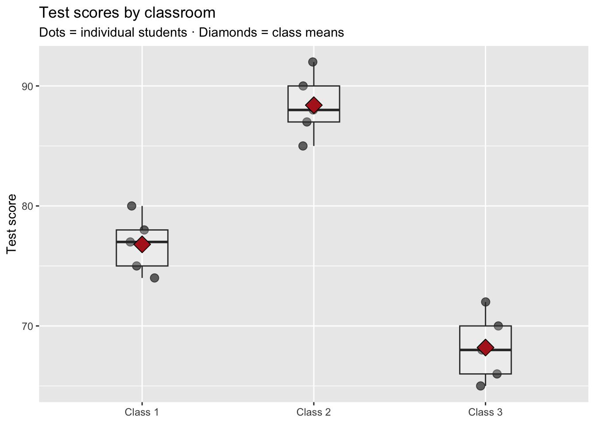
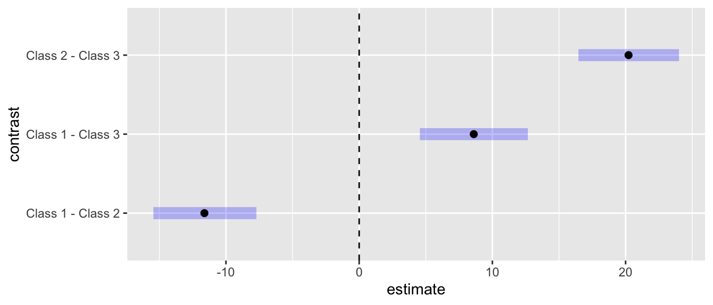

Lab 8 · ANOVA: Three Classrooms, Then Real Crashes
CRJU 705 · Session 8
Goal: run the complete ANOVA workflow from today’s lecture — the two variances by hand, aov() + Tukey’s HSD, and the Bayesian version with brms + emmeans — first on a small classroom example where you can check every number, then on real Alaska crash data.
The R4DS wrangling thread wrapped up before the break, so there’s no new data-skills content today: this lab is pure statistics practice.
How labs work: run the Setup chunk as-is, follow the Walkthrough along with me, then complete the Your Turn tasks in your own script. The Exit Ticket gets submitted to Canvas before you leave.
Setup
Open RStudio, start a new R script, and run:
First time using brms? Install both new packages before anything else: install.packages(c("emmeans", "brms")). And when you run your first brm() model of a session, R will sit at Compiling Stan program... for a minute before sampling starts. That’s normal — Stan is compiling your model into C++. It is not frozen. If instead you get an error mentioning a compiler or toolchain, flag me down.
Our walkthrough data are the three classrooms from lecture — typed in by hand, because 15 numbers you can see beat 15,000 you can’t when you’re learning what a method does:
The question: did these three classrooms perform differently, or are the differences just the usual student-to-student bounce?
Walkthrough
Look first
Always. Before any test:
class_means <- classrooms |>
summarize(mean_score = mean(score), .by = classroom)
ggplot(classrooms, aes(classroom, score)) +
geom_jitter(width = 0.08, height = 0, size = 3, alpha = 0.6) +
geom_boxplot(alpha = 0.2, width = 0.3) +
geom_point(data = class_means, aes(y = mean_score),
shape = 23, size = 5, fill = "firebrick") +
labs(title = "Test scores by classroom",
subtitle = "Dots = individual students · Diamonds = class means",
x = NULL, y = "Test score")
Class 2 sits high, Class 3 sits low, and the spread inside each class is modest. That’s the whole ANOVA story in one picture — the rest of the lab is putting numbers on it.
The two variances, by hand
Within-group variance = the average spread inside a class. Between-group variance = the spread of the class means themselves.
# A tibble: 3 × 3
classroom class_mean class_var
<fct> <dbl> <dbl>
1 Class 1 76.8 5.7
2 Class 2 88.4 7.3
3 Class 3 68.2 8.2[1] 7.066667between_var[1] 102.76between_var / within_var # signal-to-noise ratio[1] 14.54151The class means are about 14.5 times more spread out than chance bouncing within classes would produce. Strong signal.
aov()’s F?
Because aov() scales the between-group signal by the group size before comparing it to the noise: a gap between means built on 5 students each is stronger evidence than the same gap built on 2. With equal groups, F = group size × our hand ratio — here, 5 × 14.5 ≈ 72.7. Watch for exactly that number below. Same logic, different units.
The frequentist ANOVA
Df Sum Sq Mean Sq F value Pr(>F)
classroom 2 1027.6 513.8 72.71 1.96e-07 ***
Residuals 12 84.8 7.1
---
Signif. codes: 0 '***' 0.001 '**' 0.01 '*' 0.05 '.' 0.1 ' ' 1Reading the table against our hand math:
- Mean Sq Residuals = 7.1 — our within-group variance, exactly
- Mean Sq classroom = 513.8 — our between-group variance × 5 (the group size): 5 × 102.76
- F(2, 12) = 72.7, p ≈ 0.0000002 — far beyond anything a null world produces. Something differs.
Which classes differ? Tukey’s HSD
The omnibus F never says which pairs. Tukey’s HSD tests every pair while keeping the family-wise false-alarm rate at 5% (remember the pile-of-t-tests problem from lecture):
TukeyHSD(class_model) Tukey multiple comparisons of means
95% family-wise confidence level
Fit: aov(formula = score ~ classroom, data = classrooms)
$classroom
diff lwr upr p adj
Class 2-Class 1 11.6 7.114603 16.085397 0.0000456
Class 3-Class 1 -8.6 -13.085397 -4.114603 0.0006899
Class 3-Class 2 -20.2 -24.685397 -15.714603 0.0000001All three intervals exclude 0 with tiny adjusted p-values: every class differs from every other class.
The Bayesian version
Same formula, Bayesian machinery. Fit once, then let emmeans do the summarizing:
class_bayes <- brm(score ~ classroom, data = classrooms,
chains = 2, iter = 2000, seed = 705, refresh = 0)class_post <- emmeans(class_bayes, ~ classroom)
class_post classroom emmean lower.HPD upper.HPD
Class 1 76.8 74.2 79.7
Class 2 88.4 85.8 91.4
Class 3 68.2 65.6 71.0
Point estimate displayed: median
HPD interval probability: 0.95 One row per class: posterior median and 95% HPD interval for that class’s mean.
pairs(class_post) contrast estimate lower.HPD upper.HPD
Class 1 - Class 2 -11.6 -15.45 -7.71
Class 1 - Class 3 8.6 4.56 12.67
Class 2 - Class 3 20.2 16.46 24.01
Point estimate displayed: median
HPD interval probability: 0.95 plot(pairs(class_post)) +
geom_vline(xintercept = 0, linetype = 2)
The interpretation rule for pairwise differences: if an interval crosses 0, zero (“no difference”) remains a credible value — no credible difference. If it excludes 0, the difference is credible. Here none of the three intervals crosses 0, so the Bayesian analysis agrees with Tukey: all three classes differ.
Your Turn
Work in your own script. Comment each answer.
1. Flatten the classrooms. Erase the group differences but keep the within-class spread:
In comments: which numbers changed, which stayed the same, and why? What does aov() conclude now, and what do the Tukey intervals do?
2. Real data — do injuries differ by crash cause? The crashes data (20,000 real-world-style Alaska crashes, from Lab 5 and Homework 5) record each crash’s primary_cause. Keep three causes and look first:
crash3 <- crashes |>
filter(primary_cause %in% c("speeding", "distracted", "wildlife"))
# a) Compute mean, SD, and n of `injuries` for each cause (.by = primary_cause)
# b) Make the look-first plot (boxplot + mean diamonds, as in the Walkthrough).
# Injuries are small whole numbers, so the boxes will look blocky —
# that's the data, not a bug. The diamonds are doing the real work here.3. Both traditions on crash3. Run aov() + summary(), then TukeyHSD(). In comments: which pairs differ? One pair should not — name it, and report the interval that told you so. Then fit the Bayesian version (this one samples on ~8,800 rows — give it a minute or two) and check pairs():
# aov() + summary() + TukeyHSD() on crash3
# then:
# crash_bayes <- brm(injuries ~ primary_cause, data = crash3,
# chains = 2, iter = 2000, seed = 705, refresh = 0)
# crash_post <- emmeans(crash_bayes, ~ primary_cause)
# pairs(crash_post)Do the two traditions agree about which pair shows no real difference? And practically: how many more people are injured in the average speeding crash than the average wildlife crash?
4. (Stretch) All nine causes. Rerun aov() and TukeyHSD() on the full crashes data — 9 groups means 36 pairwise comparisons. How many come out significant? Why would running 36 unadjusted t-tests instead be a terrible idea? (Lecture’s false-alarm table has the number.)
# your code hereExit Ticket
Submit a short R script to Canvas before you leave, containing:
- One sentence each, in comments: what within-group variance measures, what between-group variance measures, and what F compares
- Your crash-cause conclusion, two ways: one frequentist sentence (F and a Tukey pair) and one Bayesian sentence (an HPD interval) — each including the size of the difference in injuries, not just “significant”
- A comment naming the pair of crash causes that showed no credible difference, and what its interval looked like in each tradition
- A comment: why is ANOVA-then-Tukey better than running a pile of unadjusted t-tests?